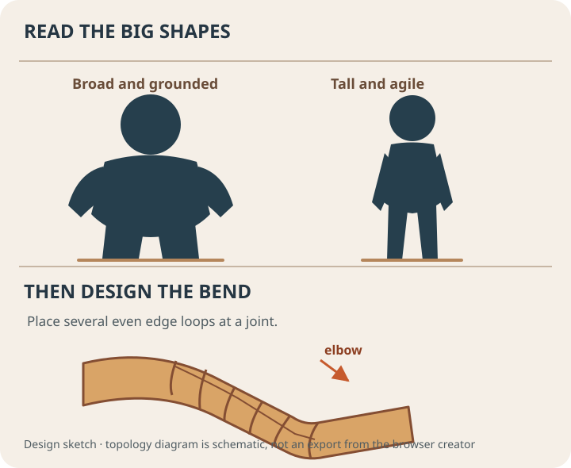
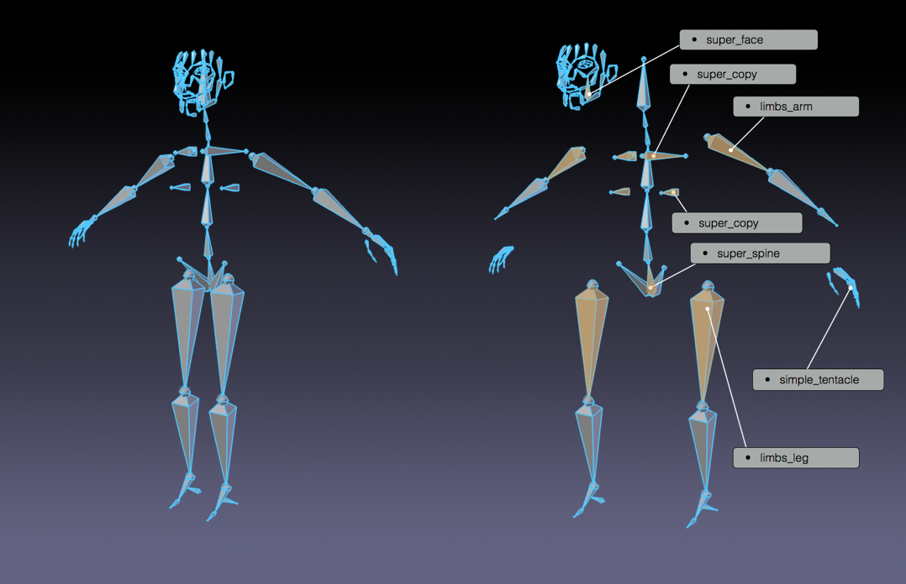
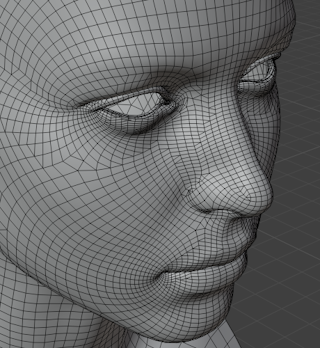
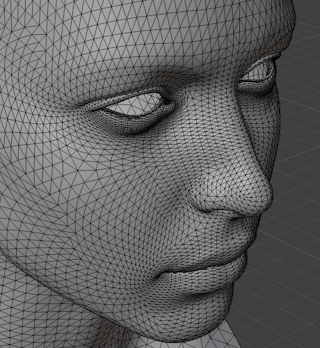
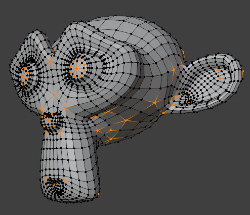

Observe the figure
Proportion studies and maquettes reduced a complex body to readable masses and landmarks.
First activity · 20 minutes
Choose a starting character below. Change one large shape (head, shoulders, or legs), one facial shape, and one costume detail. Inspect the front and side before adding more detail.
In Blender: use the creator as a design sketch. Model the chosen silhouette from a reference; place extra edge loops around bending joints. The exported OBJ is a static study mesh, so rebuild clean topology before rigging.

Start with the editable technique workshop above. Reuse your model in the next lesson. The detailed walkthrough below uses Blender; choose another app using Tool Rosetta and the transfer checklist above.
Character Art · 65–80 minutes · Grades 8–12
Plan the silhouette first, then route a regular mesh around places that bend. This lesson box-models a simple stylized character with topology you can inspect before rigging.
Finish line: a simple, symmetric, all-quad character mesh, smoothed with a Subdivision Surface modifier.
From figure study to deforming mesh
Artists used anatomy drawings, clay maquettes, jointed figures, and stop-motion puppets to understand bodies in space. Computer animation added a new requirement: the surface had to be organized so a hidden skeleton could bend it repeatedly without collapsing.
Proportion studies and maquettes reduced a complex body to readable masses and landmarks.
Armatures gave physical characters a controllable skeleton for frame-by-frame motion.
Edge loops and joints connect an editable mesh to a rig so one model can perform many poses.
Predict: Where would a clay figure crease when its elbow bends, and where should your digital edge loops go?
Blender context: Blender Foundation: from an animation-studio tool to an open 3D suite
Reference
Proportions before polygons
A believable stylized human is roughly 7–7.5 head-heights tall. Cartoonier styles compress toward 4–5.
Press Numpad 1, then use 3D Viewport → Shift+A → Image → Reference to trace over a front-view sketch or photo.
Your goal is a low-poly, game-ready base — not a photoreal sculpt. Big, readable shapes beat fine detail.

Block out
Extrude the skeleton of the shape
Scale it into the torso's rough proportions in Front view, on the +X half of the character only. Aim for a total character height around 1.7m to 1.8m so it fits the room scene later.
In Edit Mode, select the shoulder-side face and press E repeatedly to extend an arm outward in short, jointed segments.
Select the base of the torso and extrude downward the same way, through hip, knee, and ankle.
Press Ctrl+R near each elbow, knee, and shoulder to add the extra edge loop that lets it bend cleanly later.
Pulling a single vertex to shape a torso curve leaves a hard dent. Press O to turn on Proportional Editing, then G to grab — nearby geometry moves with your selection, falling off smoothly with distance. Scroll the mouse wheel while dragging to grow or shrink how far the effect reaches.
Topology
The rule that protects everything later
Topology is how a mesh's edges flow across its surface. Good topology is invisible when a character stands still and essential the moment it moves.
Useful at bends
A four-sided face. A run of evenly spaced quads makes edge loops easier to edit and control around a joint.
Place deliberately
Triangles render normally, but a triangle on a bending elbow can interrupt the loop you need to shape the crease. Move it to a calmer area when possible.
Avoid at joints
A vertex with 3 or 5+ edges connected to it. Unavoidable in a few places, but a pole sitting on a knee or elbow will pinch when it bends.



Enable 3D Viewport header → Viewport Overlays popover → Text Info → Statistics. In Edit Mode, use 3D Viewport header → Select → Select All by Trait → Faces by Sides to find stray triangles and n-gons.
Smooth
From blocky to stylized
Subdivision Surface smooths the low-poly cage into a rounded final shape while you keep editing the simple version underneath. It is non-destructive — turn it off any time to see and edit the base mesh.
Properties Editor → Modifiers (wrench) → Add Modifier → Generate → Subdivision Surface Start at 2 viewport levels.
Select an edge loop, then use 3D Viewport → Sidebar (N) → Item → Transform → Edge Data → Crease to keep it sharp through subdivision.
3D Viewport → Object Mode → Object → Shade Smooth by Angle keeps the surface continuous while preserving edges above the chosen angle.
Build
Hands on
Extrude from a single torso cube on the +X half, following your reference image.
Extrude or add a separate sphere for the head, scaled to your chosen head-height proportion.
Shoulder, elbow, wrist, hip, knee, ankle — each needs at least one extra edge loop.
Fix the origin to the centerline, then use Properties Editor → Modifiers → Add Modifier → Generate → Mirror.
Smooth the form, crease any edges that should stay sharp, then Shade Smooth.
Check for stray triangles or poles at joints, rename the object, and save as 05-character.blend.
Check
Exit ticket
Definition of done
The Character Rigging and Character Animation lessons in the Game Asset Studio pathway pick up exactly where this one ends.